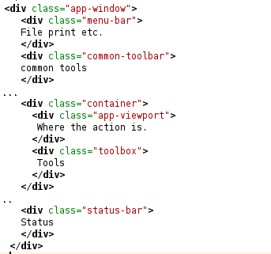
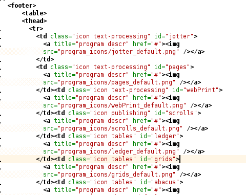
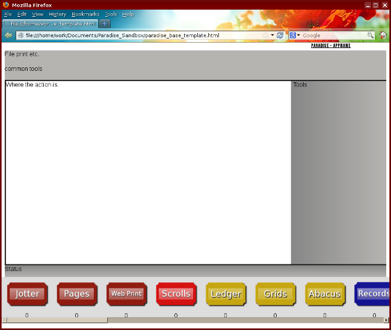
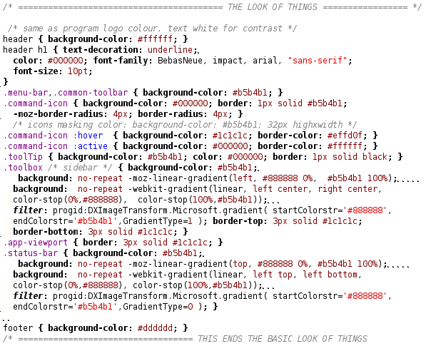

API Documentation
Look and Feel of the Base Template
The base template is labelled paradise_base_template.html. It's CSS file is currently called screen.css. It uses HTML5, JQuery and CSS3 and will only work correctly in the following browsers:
- Internet Explorer 9 +
- Opera 10 + (untested)
- Firefox 16 +
- Chrome, and other recent webkit based browsers
I may make the base template themable in the future, that would warrant a separate theme.css file and a drop down list of themes to choose. The themes should have few pictures, unless very small to make the memory footprint smaller.
Base Template HTML
The head is as usual, with the title and meta tags deliberately left blank. It's just bog standard HTML5 with a link to the screen.css file. So I'll explain the body content (between the body tags).
The header is set small by default to mimick a window titlebar. It includes a favicon on the left, with an image tag and the title is on the right.
The title is formatted like: Paradise - appName. The appName changes to whatever the application title is (eg. Jotter or a user defined app).
The Layout Div's
Below are the layout div's, .app-window is the overall container class. The second level classes are:
- menu-bar (File, View etc)
- common-toolbar (Application specific useful commands for common tasks).
- container (to split up the two columns, app-viewport and toolbox).
- status-bar (for statuses and error messages etc).
The third level classes are .app-viewport and .toolbox. The viewport is where the user's files are shown (the work area). The toolbox holds the more generic tools such as copy, paste, font, zoom, find etc. This layout was inspired by Calligra office, which has a similar layout. Due to the prevalence of widescreen monitors, I also wanted to use some of the horizontal window space.
The Launcher Bar (Footer)
After messing about with absolute positioning for the program icons, I simply created a table of images instead. Each top row table cell contains an icon, that is simply a picture within a link. The other bottom table row contains a number that will link to a right click context menu, to switch between open files. It would usually be 1, but would be incremented for each new file created and not closed in that program.
Each table cell has a default class of icon and a program group class (each program group has a different colour, say red for text-processing). The id of each table cell is set to the program name. This is for CSS and Javascript selecting. See below for an excerpt of the launcher bar code.
jQuery Scripts
These are kept near the ending </body> tag, so the rest of the page and the CSS gets rendered before the script runs. The first script is to alter the width and height of the application in accordance with the space available. The browser window width and height are fetched and saved into variables for later access.
The new styles are applied inline, not saved into the css file. When the user resizes the browser window, the template also resizes itself with the resize(checkWidth) function. Separate CSS files will be used in the future to deal with small screen sizes (anything less than 700px wide).
The number 265 is a bit of a fudge, and may be fixed in the future. It's the height of the footer, menu bar, common toolbar and the header added together, plus a little extra for any borders applied.
CSS Properties
All of the layout containers, such as .menu-bar are set to position relative, to make sure they're still in the source order and for more ease of use in changing dimensions. Most dimensions are in percent, except for the height of toolbars. Three other pixel dimensions that get overridden by the earlier jQuery script are the .app-window width, and the container width and height. Even the launcher bar is positioned relative, with it sitting on the bottom.
Above the layout code is the selection of some custom fonts, then the style rules for the whole page (<body>). The custom fonts are also included in .eot format for Internet Explorer users. These fonts are for the user interface only, and not for any documents created.
This site should be compatible with Internet Explorer 9, although the one developer (me) hasn't got access to that particular browser at the moment. This means only emulators can be used until the situation is rectified. The developer will either try to find a friend who was IE 9 or attempt to download and install it on her laptop (Windows 7 but not online). The emulator wouldn't be satsifatory for testing purposes because the web browser's full screen mode is used to test the site, and any Javascript bugs need to be chased up.
Different separate themes could be used for this site. These could be loaded by jQuery from a drop-down menu, or selected from the starter or settings page. Small 1 pixel by x pixels of height/width images could be used, but no bigger images than that. Despite the increases in bandwidth in recent years I want the 'site to be snappy, for poorer users who can only afford crap Internet access. The colours should always have the same relative contrast between light and dark, unless the theme is for vision impaired users, when the contrast would be more.
The basic look presented and in the screenshot above is mostly grey, although the titlebar header would be a colour (of the program group). Basic gradients are used, and off-black borders used to separate out areas. The idea was for a clean, minimalistic design. The look comes from the graphics rules page. Lemon yellow is used as a highlighting colour, and may be used on some icons (still to come).
Please note, the launcher bar is themed separately above the basic look CSS, and always remains basically the same except for the background colour. Larger icons and toolbars for vision impaired users would be an idea (they could zoom in but they may have to scroll more to find page elements and the icons would look grainy). Larger icons possibly as flexible SVG would be better on larger screens. The layout is currently tested on a 1440x900 monitor at full screen size and smaller. Tab indexing and other things must be implemented too, also there could be a pop-up onscreen keyboard setting for touchscreens or those unable to type.